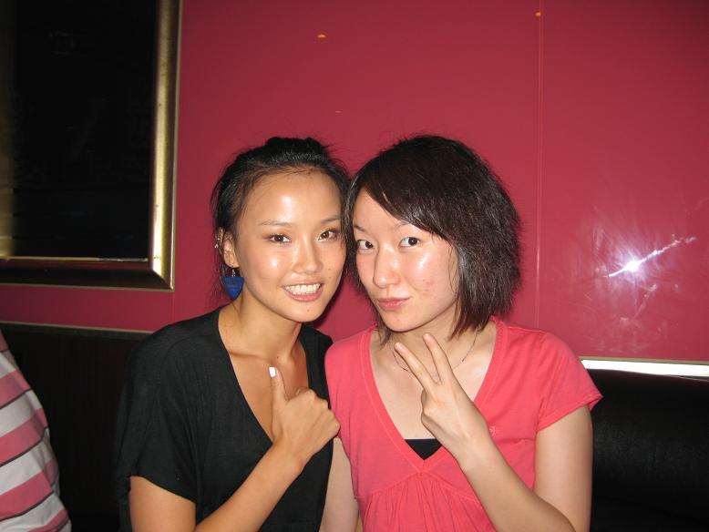
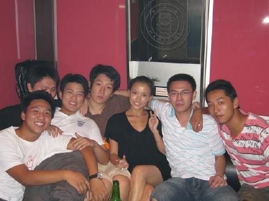
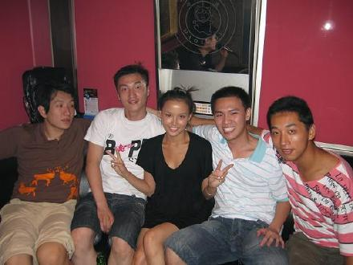
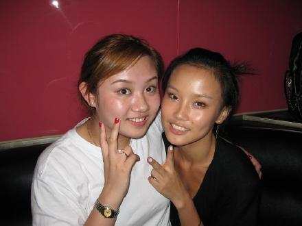
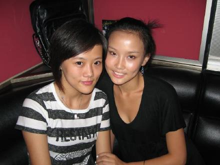
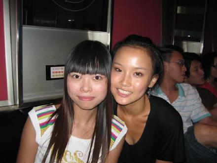
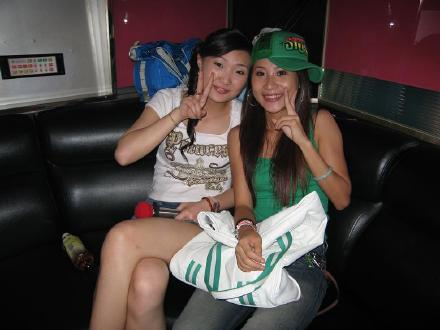

哎呀!太开心的呀...我昨天居然和以前中学里的同学聚会了...我在念中学的时候学校里一共有14班...我们这些热爱体育搞体育的人都被聚集到了14班,我们是体育班....大家在一起学习了4年啊....毕业后就分道扬镳了...到现在已经有六年多没见了...昨天我们又相距在了一起....14班的几乎都来了...好不容易啊...看到他们我真的很开心很开心...说不出的感觉...想想当年大家在一起上课..一起上学...一起放学...成绩好的帮助成绩不好的不惜功课.还有作弊..哈哈哈..大家变化都好大..男生们都边成了大男孩...有的孩子继续念书...有的已经工作了...女生们当然都是女大18变,越来越漂亮了...
可惜的是昨天本来约好要一起吃晚饭的...可我因为要做电台节目...所以就没能赶上吃饭...所以我们在唱KTV的时候有几个同学已经回家了...所以没见到5555555
这位是以前14班的班干部(中队长)...频频....她的成绩永远很好...她曾经可是手球运动员噢....

男生们都不好意思和我单独拍照...害羞的同学们...所以我只好主动的挤在大家中间拉..哈哈哈哈
从左到右介绍一下吧...1凯凯(中队长)2绰号:牛牛曾经是我的同桌...3杰杰曾经也是班干部也做过我的同桌...4荣荣,曾经也是同桌...5森森,曾经也是我的同桌..6曾曾(大队长)永远的全班成绩第一...很多同桌吧..哈...我们14班班主任老爱让我们换坐位....这里有曾经是打排球的...羽毛球...射击...你们猜猜谁像干什么的吧!哈哈哈哈

这还有个踢足球..叫文文

这是我上学时候的好朋友...当然也是现在的好朋友...骆骆..以前我们可是一起训练排球噢....她打的很棒...

婷婷...我倒是真的忘记她以前是哪个运动项目的了...555555

打羽毛球的娇娇..也是个好学生啊....

贲贲和蓉蓉...一个是田劲运动员...一个也是曾经和一起训练的二传手...
